소음진동기사(구) (2017-03-05 기출문제)
1과목: 소음진동개론
1. 지진의 명칭과 진동가속도레벨(dB), 그리고에 따른 물적 피해에 관한 설명으로 가장 적합한 것은?
- 경진(weak) : 50±5, 약간 느낌
- 약진(rather strong) : 80±5, 창문, 미닫이가 흔들리고 진동음 발생
- 중진(strong) : 120±5, 벽의 균열이나 비석이 넘어짐
- 강진(very stong) : 150이상 단층이나 산사태 등이 발생
(정답률: 69%)

2. 다음 청각기관 중 임피던스 변환기능을 가진 것은?
- 이소골
- 고막
- 기저막
- 외이도
(정답률: 73%)
3. 다음 ( )안에 들어갈 주파수 대역으로 옳은 것은?
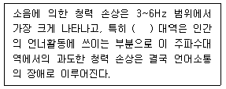
- 50 ~ 100Hz
- 500 ~ 2.5kHz
- 5 ~ 8kHz
- 10 ~ 100kHz
(정답률: 78%)
4. D특성 청감보정회로에 대한 설명으로 옳지 않은 것은?
- A특성 청감보정회로처럼 저주파 에너지를 많이 소거시키지 않는다.
- 1 ~ 12kHz 범위의 고주파음에 대하여 더 크게 보충시킨 구조이다.
- 신호 보정은 중음역대이며, 소음등급평가의 한정적인 부분에만 적용된다.
- 항공기소음에 대하여 많이 적용하는 청감응답이다.
(정답률: 34%)
5. 실내 고장 바닥 위에 점음원이 있다. 실정수가 316m2일 때 실반경(m)은?
- 2.5
- 3.5
- 5
- 7
(정답률: 67%)
6. 다음은 인체의 귓구멍(외이도)을 나타낸 그림이다. 이 때 공명 기본음 주파수 대역(Hz)은? (단, 음속은 340m/s이다.)
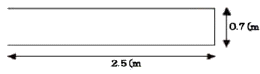
- 750
- 3400
- 6800
- 12143
(정답률: 45%)
7. 청력에 관한 설명으로 가장 거리가 먼 것은?
- 음의 대소(큰 소리, 작은 소리)는 음파의 진폭(음압)의 크기에 따른다.
- 사람의 목소리는 100 ~ 10000Hz, 회화의 명료도는 200 ~ 6000Hz, 회화의 이해를 위해서는 500 ~ 2500Hz의 주파수 범위를 각각 갖는다.
- 20Hz 이하는 초저주파음, 20kHz를 초과하는 음은 초음파라 한다.
- 4분법 청력손실이 옥타브밴드 중심주파수 500 ~ 2000Hz 범위에서 15dB 이상이면 난청으로 분류한다.
(정답률: 74%)
8. 음장의 종류 및 특징에 관한 설명으로 옳지 않은 것은?
- 근음장에서 음의 세기는 음압의 2승에 비례하며, 입자속도는 음의 전파방향에 따라 개연성을 가진다.
- 자유음장은 원음장 중 역2승법칙이 만족되는 구역이다.
- 확산음장은 잔향음장에 속한다.
- 잔향음장은 음원의 직접음과 벽에 의한 반사음이 중첩되는 구역이다.
(정답률: 77%)
9. 공조기소음 등과 같은 광대역의 정상적인 소음을 평가하기 위해 Beranek가 제안한 것으로, 대상 소음을 옥타브 분석하여 대역 음압레벨을 구한 후 밴드레벨을 기입하여 각 대역 중 최댓값을 구하는 것은?
- NC
- LNP
- NEF
- SL
(정답률: 54%)
10. 음원으로부터 10m 지점의 평균음압도는 101dB, 동거리에서 특정지향음압도는 107dB이다. 이 때 지향계수는?
- 2.11
- 2.56
- 3.98
- 5.01
(정답률: 42%)
11. 실내 용적 485m3 인 공장의 잔향시간이 0.5초라면 흡음력은?
- 156m2
- 254m2
- 372m2
- 506m2
(정답률: 65%)
12. 가로 6m × 세로 3m 벽면 밖에서의 음압레벨이 100dB 라면 17m 떨어진곳은 몇 dB인가? (단, 면음원 기준)
- 약 88
- 약 78
- 약 62
- 약 42
(정답률: 55%)
13. 음의 용어 및 성질에 관한 설명으로 옳지 않은 것은?
- 음선(soundray)은 음의 진행방향을 나타내는 선으로 파면에 평행하다.
- 파면(wavefront)은 파동의 위상이 같은 점들을 연결한 면이다.
- 평파면(plane wave)는 긴 실린더의 피스톤 운동에 의하여 발생하는 파와 같이 음파의 파면들이 서로 평행한 파를 말한다.
- 파동(wave motion)은 매질 자체가 이동하는 것이 아니고 매질의 변형운동으로 이루어지는 에너지 전달을 말한다.
(정답률: 71%)
14. 소음과 관련된 A와 B의 용어의 연결로 옳지 않은 것은?
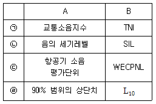
- ㉠
- ㉡
- ㉢
- ㉣
(정답률: 67%)
15. 진동에 관련된 표현과 그 단위(Unit)를 연결한 것으로 옳지 않은 것은?
- 고유각진동수 → rad/s
- 진동가속도 → dB(A)
- 감쇠계수 → N/(cm/S)
- 스프링 정수 → N/cm
(정답률: 71%)
16. 각 주파수에 대한 공해진동의 신체적 영향으로 가장 거리가 먼 것은?
- 1~3Hz : 호흡이 힘들고, 산소소비 증가
- 4~14Hz : 복통느낌
- 6Hz : 허리, 가슴 및 등쪽에 심한 통증을 느낌
- 30~40Hz : 내장의 심한 공진
(정답률: 71%)
17. 평균흡음율이 0.02인 방을 방음처리하여 평균흡음율을 0.27로 만들었다. 이 때 흡음으로 인한 감음량은 몇 dB인가?
- 7
- 11
- 22
- 25
(정답률: 67%)
18. 다음 중 사람이 느끼는 최소 진동 역치 범위(dB)로 가장 적합한 것은?
- 10±5
- 25±5
- 30±5
- 55±5
(정답률: 73%)
19. 항공기 소음을 소음계의 D특성으로 측정한 값이 104dB(D)였다. 이 때 감각소음레벨(PNL)은 대략 몇 PN dB인가?
- 102
- 109
- 111
- 115
(정답률: 69%)
20. 중심주파수가 3550Hz인 경우 차단주파수 범위로 가장 알맞은 것은? (단, 1/3옥타브 필터(정비형) 기준)
- 3106 ~ 4252Hz
- 3106 ~ 3985Hz
- 3163 ~ 3985Hz
- 3163 ~ 4252Hz
(정답률: 74%)
2과목: 소음방지기술
21. 방음벽 재료로 음향특성 및 구조강도 이외에 고려하여야 하는 사항으로 가장 거리가 먼 것은?
- 방음벽에 사용되는 모든 재료는 인체에 유해한 물질을 함유하지 않아야 한다.
- 방음벽의 모든 도장은 광택을 사용하는 것이 좋다.
- 방음판은 하단부에 배수공(Drain hole) 등을 설치하여 배수가 잘 되어야 한다.
- 방음벽은 20년 이상 내구성이 보장되는 재료를 사용하여야 한다.
(정답률: 69%)
22. 다음 표는 어떤 자재의 1/3 옥타브 대역으로 측정한 중심주파수별 흡음율이다. 감음계수(NRC)는 얼마인가?
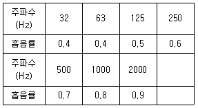
- 0.48
- 0.55
- 0.65
- 0.75
(정답률: 63%)
23. 흡음재료 선택 및 사용상의 유의점에 관한 설명으로 옳지 않은 것은?
- 실(室)의 모서리나 가장자리 부분에 흡음재를 부착시키면 효과가 좋아진다.
- 다공질 재료는 산란되기 쉬우므로 표면을 얇은 직물로 피복하는 것이 바람직하다.
- 다공질 재료의 표면을 도장하면 고음역에서 흡음율이 개선된다.
- 막진동이나 판진동형의 것은 도장해도 차이가 거의 없다.
(정답률: 60%)
24. 자유공간에서 중심주파수 125Hz로부터 10dB이상의 소음을 차단할 수 있는 방음벽을 설계하고자 한다. 음원에서 수음점까지의 음의 회절경로와 직접경로 간의 경로차가 0.55m라면 중심주파수 125Hz에서의 Fresnel number는? (단, 음속은 340m/s)
- 0.25
- 0.4
- 0.49
- 1.2
(정답률: 57%)
25. 산업기계에서 발생하는 유체역학적 원인인 기류음의 방지대책과 가장 거리가 먼 것은?
- 분출유속의 저감
- 관의 곡률완화
- 방사면의 축소
- 밸브의 다단화
(정답률: 67%)
26. 소형기계가 세 벽이 만나는 모서리에 놓여서 가동될 때, 음에너지 밀도는 공장 바닥 위에 놓여서 가동될 때와 비교하여 어떻게 변화되는가?
- 2배 증가
- 4배 증가
- 8배 증가
- 16배 증가
(정답률: 47%)
27. 6m×4m×5m의 방이 있다. 이 방의 평균 흡음율이 0.2일 때 잔향시간(초)은?
- 0.65
- 0.86
- 0.98
- 1.21
(정답률: 53%)
28. 음장입사 질량법칙이 만족되는 영역에서 면밀도 250kg/m2인 단일벽체에 1000Hz의 음이 벽면에 난입사 할 때, 이 벽체의 투과손실(dB)은?
- 37.1
- 48.6
- 53.2
- 65
(정답률: 63%)
29. 다음 중 방음벽에 관한 설명으로 가장 거리가 먼 것은?
- 방음벽에 의한 소음감쇠량은 주로 방음벽의 높이에 의하여 결정된다.
- 방음벽은 벽면 또는 벽상단의 음향특성에 따라 흡음형, 반사형, 간섭형, 공명형 등으로 구분된다.
- 방음벽은 사용되는 재료에 따라 금속제형, 투명형, PVC형 등으로 구분된다.
- 방음벽은 기본적으로 음의 굴절감쇠를 이용한 것이다.
(정답률: 65%)
30. 취출구 소음기의 직경이 100mm, 취출유속이 280m/sec에서 발생되는 주된 소음의 주파수는?
- 560Hz
- 780Hz
- 960Hz
- 1020Hz
(정답률: 44%)
31. 음향파워레벨이 일정한 기계가 실내에서 운전되고 있다. 실내 음향특성 등의 변화에 따른 실내소음의 변화특성으로 가장 적합한 것은?
- 실정수가 작을수록 실내소음은 작아진다.
- 평균흡음율이 클수록 실내소음은 커진다.
- 기계로부터 거리의 역2승법칙으로 실내소음이 줄어든다.
- 직접음과 잔향음이 같은 거리는 지향계수의 평방근에 비례한다.
(정답률: 44%)
32. 팽창형 소음기의 입구 및 팽창부의 직경이 각각 55cm, 125cm일 때, 기대할 수 있는 최대투과손실(dB)은?
- 약 2
- 약 5
- 약 9
- 약 15
(정답률: 71%)
33. 흡음에 관한 설명으로 옳지 않은 것은?
- 다공질형 흡음재는 음에너지를 운동에너지로 바꾸어 열에너지로 전환한다.
- asbestos, rock wool 등은 중·고음역에서 흡음성이 좋다.
- 다공질재료를 벽에 밀착할 경우 주파수가 낮을수록 흡음율이 증가되지만, 벽과의 사이에 공기층을 두면 그 두께에 따라 초저주파역까지 흡음효과가 증대된다.
- 판진동형 흡음은 대개 80~300Hz 부근에서 최대흡음율 0.2~0.5를 지니며, 그 판이 두껍거나 공기층이 클수록 흡음특성은 저음역으로 이동한다.
(정답률: 50%)
34. 흡음덕트형 소음기의 최대 감음 주파수의 범위로 가장 적합한 것은? (단, 덕트 내경=0.5m, 음속=340m/s 기준)
- 340Hz < f < 680Hz
- 170Hz < f < 340Hz
- 200Hz < f < 400Hz
- 100Hz < f < 200Hz
(정답률: 44%)
35. 부피 5500m3, 내부표적 1850m2인 공장의 평균흡음율이 0.28일 때 평균자유행로(WFP, m)는?
- 7.6
- 9.2
- 11.9
- 14.7
(정답률: 65%)
36. 균질의 단일벽 두께를 20% 올리면 일치효과의 한계주파수는 어떻게 변화하겠는가? (단, 기타 조건은 일정함)
- 약 20% 저하
- 약 17% 저하
- 약 9.5% 상승
- 약 20% 상승
(정답률: 37%)
37. 파이프 반경이 0.5m인 파이프 벽에서 전파되는 종파의 전파속도가 5326m/s인 경우 파이프의 링 주파수(Hz)는?
- 1451.63
- 1591.55
- 1695.32
- 1845.97
(정답률: 50%)
38. 구멍 직경 9mm, 구멍 간의 상하좌우간격 22mm, 판두께 12mm인 다공판을 55mm의 배후공기층을 두고 설치할 경우 공명(흡음) 주파수(Hz)는? (단, 기온은 145℃ 이고, 구멍의 크기는 음의 파장에 비해 매우 작다.)
- 670
- 604
- 578
- 552
(정답률: 34%)
39. 동일한 재료(면밀도 200kg/m2)로 구성된 공기층의 두께가 16cm인 중공이중벽이 있다. 500Hz에서 단일벽체의 투과손실이 46dB일 때, 중공이중벽의 저음역에서의 공명 주파수는 약 몇 Hz에서 발생되겠는가? (단, 음의 전파속도는 343m/s, 공기의 밀도는 1.2kg/cm3이다.)
- 9
- 15
- 19
- 26
(정답률: 56%)
40. 용적 175m3, 표면적 150m2인 잔향실의 잔향시간은 4.5초이다. 만약 이 잔향시의 바닥에 12m2의 흡음재를 부착하여 측정한 잔향시간이 3.1초가 된다면 잔향실법에 의한 흡음재의 흡음율은?
- 0.14
- 0.20
- 0.28
- 0.38
(정답률: 54%)
3과목: 소음진동 공정시험 기준
41. 철도진동 측정자료 평가표 서식에 반드시 기재되어야 하는 사항으로 거리가 먼 것은?
- 레일길이
- 승차인원(명/대“)
- 열차통행량(대/hr)
- 평균 열차속도(km/hr)
(정답률: 69%)
42. 소음 측정기의 청감 보정회로를 C 특성에 놓고 측정한 결과치가 A특성에 놓고 측정한 결과치보다 클 경우 소음의 주된 음역은?
- 저주파역
- 중주파역
- 고주파역
- 광대역
(정답률: 65%)
43. 다음은 소음의 환경기준 측정방법 중 측정점에 관한 설명이다. ( )안에 알맞은 것은?
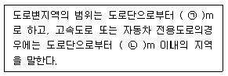
- ㉠ 차선수×10, ㉡ 100
- ㉠ 차선수×15, ㉡ 100
- ㉠ 차선수×10, ㉡ 150
- ㉠ 차선수×15, ㉡ 150
(정답률: 58%)
44. 도로교통진동 측정자료 평가표 서식에 기재되어야 하는 사항으로 가장 거리가 먼 것은?
- V특성(수직)
- X특성(수평)
- Y특성(수평)
- V특성(수직) 및 X, Y특성(수평)을 동시에 사용
(정답률: 53%)
45. 복원중 (문제 오류로 현재 복원중입니다. 보기 내용을 아시는 분들께서는 오류 신고를 통하여 보기 작성 부탁 드립니다. 정답은 1번입니다.)
- 복원중
- 복원중
- 복원중
- 복원중
(정답률: 65%)
46. 도로교통소음을 측정하고자 할 때, 소음계의 동특성은 원칙적으로 어떤 모드로 측정하여야 하는가?
- 느림(Slow)
- 빠름(Fast)
- 충격(Impulse)
- 직선(Lin)
(정답률: 77%)
47. 표준음 발생기의 용도로 가장 적합한 것은?
- 소음계의 주파수 전이
- 소음계의 측정감도 교정
- 소음계의 밴드폭 교정
- 소음계의 동특성 조정
(정답률: 53%)
48. 측정하고자 하는 소음도가 지시계기의 범위내에 있도록 하기 위한 감쇠기는?
- 교정장치
- 레벨레인지 변환기
- 청감보정회로
- 동특성 조절기
(정답률: 69%)
49. 표준진동 발생기(calibrator)의 발생진동의 오차는 얼마 이내(기준)이어야 하는가?
- ±0.1dB 이내
- ±0.5dB 이내
- ±1dB 이내
- ±10dB 이내
(정답률: 62%)
50. A공장에서 기계를 가동시켜 진동레벨을 측정한 결과 81dB이었고, 기계를 정지하고 진동레벨을 측정하니 74dB 이었다. 이 때 기계의 대상진동 레벨(dB)은?
- 78
- 79
- 80
- 81
(정답률: 63%)
51. 다음은 배경진동을 보정하여 대상진동레벨로 하는 기준이다. ( )안에 알맞은 것은?
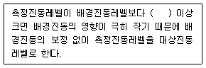
- 3dB
- 7dB
- 9dB
- 10dB
(정답률: 74%)
52. 환경기준 중 소음측정 시 밤시간대(22:00~06:00) 측정소음도의 측정시간 간격 및 측정횟수 기준으로 옳은 것은? (단, 측정점은 낮시간대에 측정한 지점과 동일)
- 2시간 간격으로 2회 이상 측정하여 산술평균한 값
- 2시간 간격으로 4회 이상 측정하여 산술평균한 값
- 4시간 간격으로 2회 이상 측정하여 산술평균한 값
- 4시간 간격으로 4회 이상 측정하여 산술평균한 값
(정답률: 77%)
53. 진동배출허용기준 측정 시 진동픽업의 설치장소로 부적당한 곳은?
- 복잡한 반사, 회절현상이 없는 장소
- 경사지지 않고, 완충물이 충분히 있는 장소
- 단단히 굳고, 요철이 없는 장소
- 수평면을 충분히 확보할 수 있는 장소
(정답률: 72%)
54. 진동레벨기록기를 사용하여 측정진동레벨을 측정할 때, 기록지상의 지시치가 불규칙적이고 대폭 변화하는 경우 도로교통진동 측정자료 분석에 사용되는 방법으로 옳은 것은?
- L5 진동레벨 계산방법에 의한 L5 값
- L10 진동레벨 계산방법에 의한 L10 값
- L50 진동레벨 계산방법에 의한 L50 값
- L90 진동레벨 계산방법에 의한 L90 값
(정답률: 64%)
55. 소음계의 구조별 성능기준에 관한 설명으로 옳지 않은 것은?
- fast-slow-switch : 지시계기의 반응속도를 빠름 및 느림의 특성으로 조절할 수 있는 조절기를 가져야 한다.
- amplifier : 동특성조절기에 의하여 전기에너지를 음향에너지로 변환시킨 양을 증폭시키는 것을 말한다.
- weighting networks : 인체의 청감각을 주파수 보정특성에 따라 나타내는 것으로, A특성과 자동차 소음측정에 사용되는 C특성도 함께 갖추어야 한다.
- microphone : 지향성이 작은 압력형으로 하며, 기기의 본체와 분리가 가능하여야 한다.
(정답률: 50%)
56. 규제기준 중 발파소음 측정방법에 대한 설명으로 옳지 않은 것은?
- 소음도 기록기를 사용할 때에는 기록지상의 지시치의 최고치를 측정소음도로 한다.
- 최고소음 고정(hold)용 소음계를 사용할 때에는 당해 지시치를 측정소음도로 한다.
- 디지털 소음자동분석계를 사용할 때에는 샘플주기를 1초 이하로 놓고 발파소음의 발생기간 동안 측정하여 자동 연산·기록한 최고치를 측정소음도로 한다.
- 소음계의 레벨레인지 변환기는 측정소음도의 크기에 부응할 수 있도록 고정시켜야 한다.
(정답률: 53%)
57. 발파소음 측정자료 평가표 서식에 기록되어야 하는 사항으로 거리가 먼 것은?
- 폭약의 종류
- 1회 사용량
- 발파횟수
- 천공장의 깊이
(정답률: 57%)
58. 진동레벨계의 성능에 관한 설명으로 옳지 않은 것은?
- 진동레벨계의 단위는 dB단위(ref=10-5m/s)로 지시하는 것이어야 한다.
- 진동픽업의 횡감도는 규정주파수에서 수감축감도에 대한 차이가 5dB 이상이어야 한다. (연직특성)
- 레벨레인지 변환기가 있는 기기에 있어서 레벨레인지 변환기의 전환오차가 0.5dB 이내이어야 한다.
- 지시계의 눈금오차는 0.5dB 이내이어야 한다.
(정답률: 53%)
59. 다음은 디지털 진동자동분석계를 사용할 경우 생활진동의 자료분석방법이다. ( )안에 알맞은 것은?
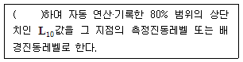
- 샘플주기를 1초 이내에서 결정하고 1분이상 측정
- 샘플주기를 1초 이내에서 결정하고 5분이상 측정
- 샘플주기를 0.5초 이내에서 결정하고 1분이상 측정
- 샘플주기를 0.5초 이내에서 결정하고 5분이상 측정
(정답률: 63%)
60. 항공기소음을 측정하여 구한 1일 WECPNL이 다음과 같을 때 7일간 WECPNL은?
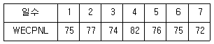
- 73
- 74
- 76
- 77
(정답률: 69%)
4과목: 진동방지기술
61. 다음 방진대책 중 가진력 저감의 예로 적절치 않은 것은?
- 회전기계 회전부의 불형평은 정밀실험을 통해 평형을 유지한다.
- 크랭크 기구를 가지는 왕복운동기는 최대한 적은 실린더를 유지한다.
- 기초에 전달되는 가진력을 저감시키기 위해서는 탄성지지를 한다.
- 지향성이 있는 가진력을 저감시키기 위해서 기계 설치 방향을 변경한다.
(정답률: 62%)
62. 2개의 같은 스프링으로 탄성지지한 기계에서 스프링을 빼낸 후 4개의 지지점에 균등하게 탄성지지하여 고유진동수를 1/4로 낮추고자 할 때 1개의 스프링 정수는 어떻게 되어야 하는가?
- 원래의 1/32
- 원래의 1/16
- 원래의 1/8
- 원래의 1/4
(정답률: 64%)
63. 아래 그림 진동계의 고유 진동수는?
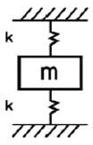
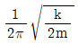
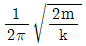
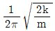
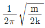
(정답률: 74%)
64. 아래 그림과 같이 진동계가 강제 진동을 하고 있으며, 그 진폭 X일 때, 기초에 전달되는 최대힘은?
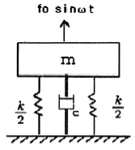
- kX＋cwX
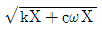
- kX2+cwX2
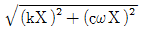
(정답률: 69%)
65. 진동방지계획 수립 시 다음 보기 중 일반적으로 가장 먼저 이루어지는 것은?
- 측정치와 규제 기준치의 차로부터 저감 목표레벨 설정
- 수진점 일대의 진동 실태조사
- 수진점의 진동 규제기준 확인
- 발생원의 위치와 발생기계를 확인
(정답률: 53%)
66. 질량 400kg인 물체가 4개의 지지점 위에서 평탄진동할 때 정적수축 1cm의 스프링으로 이계를 탄성지지하여 90%의 절연율을 얻고자 한다면 최저 강제진동수(Hz)는? (단, 감쇠비는 0임)
- 10.5
- 12.5
- 16.5
- 19.5
(정답률: 53%)
67. 진동제진성능을 나타내는 파동에너지 반사율을 나타내는 수식으로 옳은 것은? (단, Z1, Z2는 각각 재료별 특성 임피던스이다.)
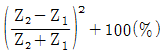
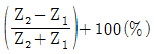
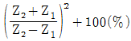
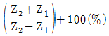
(정답률: 69%)
68. 기계를 방진하기 위해서 사용되는 금속 스프링의 장점과 거리가 먼 것은?
- 온도, 부식과 같은 환경요소에 대한 저항성이 크다.
- 저주파 차진에 좋다.
- 최대변위가 허용된다.
- 감쇠율이 높고, 공진시 전달율이 낮다.
(정답률: 62%)
69. 그림과 같은 1 자유도계 진동계가 있다. 이계가 수직방향 X(t)으로 진동하는 경우 이 진동계의 운동방정식으로 옳은 것은? (단, k=스프링정수, c=감쇠계수, f(t)=외부가진력)
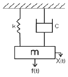
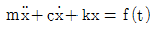
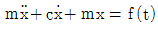
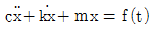
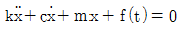
(정답률: 65%)
70. 다음 질량-스프링 계의 운동 방정식을 옳게 나타낸 것은? (단, 질량 m은 3kg, 개별 스프링 정수 k=10N/m, 감쇠는 무시한다.)
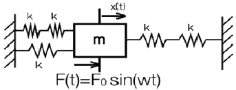
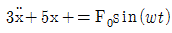
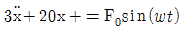
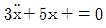
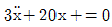
(정답률: 60%)
71. 고유진동수에 대한 강제진동수의 비가 2일 때, 진동전달율 T는?
- 1/3
- 1/4
- 1/8
- 1/15
(정답률: 69%)
72. 진동수 25Hz, 파형의 전진폭이 0.0002m/s인 정현진동의 진동가속도레벨(dB)은? (단, 기준 10-5 m/s2)
- 48
- 57
- 61
- 66
(정답률: 38%)
73. 정현파 진동에서 진동가속도의 실효치와 최대치 사이의 관계식으로 옳은 것은?
- 실효치 = √2 최대치
- 실효치 =
 최대치
최대치 - 실효치 =
 최대치
최대치 - 실효치 =
 최대치
최대치
(정답률: 71%)
74. 그림과 같이 질량 m인 물체가 외팔보의 자유단에 달려있을 때 계의 진동의 고유진동수를 구하는 식으로 옳은 것은? (단, 보의 무게는 무시, 보의 길이는 L, 강성계수 E, 면적관성모멘트 I)
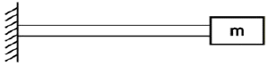
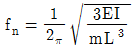
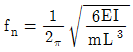
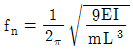
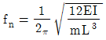
(정답률: 74%)
75. 어떤 질점의 운동변위가 x=7sin(12πt-π/3)cm로 표시될 때 가속도의 최대치 (m/s2)는?
- 4.93
- 9.95
- 49.3
- 99.5
(정답률: 57%)
76. 고무절연기 위에 설치된 기계가 1500rpm에서 22.5%의 전단율을 가질 때 평형상태에서 절연기의 정적처짐(㎝)은?
- 0.14
- 0.22
- 0.42
- 0.64
(정답률: 63%)
77. 점성감쇠 강제진동의 진폭이 최대가 되기 위해서 진동수의 비는 어떤 식으로 표시되는가? (단, ξ = 감쇠비)
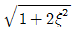
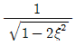
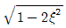
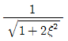
(정답률: 38%)
78. 2개의 조화우동 X1 = 9coswt, X2 = 12sinwt를 합성하면 진폭(㎝)은 얼마인가? (단, 진폭의 단위는 ㎝으로 한다.)
- 3
- 9
- 12
- 15
(정답률: 71%)
79. 무게 10N인 물체가 스프링정수 15n/㎝인 스프링에 매달려 있다고 한다. 이 계의 고유각진동수 (Wn rad/s)는?
- 28.3
- 32.3
- 38.3
- 42.3
(정답률: 67%)
80. 기계의 중량이 50N인 왕복동 압축기가 있다. 분당 회전수가 6000이고, 상하 방향 불평형력이 6N이며, 기초는 콘크리트 재질로써 탄성지지 되어 있으나, 진동전달력이 2N이었다면 진동계의 고유진동수(Nz)는?
- 30
- 40
- 50
- 60
(정답률: 37%)
5과목: 소음진동 관계 법규
81. 소음진동관리법규상 시·도지사가 법에 의하여 상시측정한 소음·진동에 관한 자료를 환경부장관에게 제출하여야 하는 기간기준으로 옳은 것은?
- 매년 1월 31일까지
- 매분기 다음 달 말일까지
- 매반기 다은 달 말일까지
- 매년 다음 달 말일까지
(정답률: 67%)
82. 소음진동관리법상 용어의 뜻으로 옳지 않은 것은?
- 소음이란 기계·기구·시설, 그 밖의 물체의 사용 또는 공동주택 등 환경부령으로 정하는 장소에서 사람의 활동으로 인하여 발생하는 강한 소리를 말한다.
- 진동이란 기계·기구·시설, 그 밖의 물체의 사용으로 인하여 발생하는 강한 흔들림을 말한다.
- 휴대용음향기가란 휴대가 쉬운 소형음향재생기기(음악재생기능이 있는 이동전화를 포함한다)로서 환경부령으로 정하는 것을 말한다.
- 방음시설이란 소음배출시설인 물체로부터 발생하는 소음을 없애거나 줄이는 시설로서 환경부장관이 고시하는 것을 말한다.
(정답률: 60%)
83. 소음진동관리법령상 소음·진동 배출시설의 설치신고 또는 설치허가대상에서 제외되는 지역과 가장 거리가 먼 것은? (단, 기타의 경우는 고려않음)
- 산업입지 및 개발에 관한 법률에 따른 산업단지
- 국토의 계획 및 이용에 관한 법률 시행령에 따라 지정된 전용공업지역
- 산업입지 및 개발에 관한 법률에 따른 준공업단지
- 자유무역지역의 지정 및 운영에 관한 법률에 따라 지정된 자유무역지역
(정답률: 57%)
84. 소음진동관리법령상 항공기소음영향도 (WECPNL) 기준으로 옳은 것은?
- 공항 인근 지역은 80, 그 밖의 지역은 70
- 공항 인근 지역은 90, 그 밖의 지역은 75
- 공항 인근 지역은 80, 그 밖의 지역은 75
- 공항 인근 지역은 90, 그 밖의 지역은 70
(정답률: 60%)
85. 소음진동관리법규상 특정공사의 사전신고대상 기계·장비의 종류에 해당하지 않는 것은?
- 천공기
- 로더
- 콘크리트 펌프
- 압입식 항타항발기
(정답률: 48%)
86. 소음진동관리법규상 과태료 부과기준으로 옳지 않은 것은?
- 위반행위의 횟수에 따른 일반적인 부과기준은 최근 1년간 같은 위반행윌 부과처분을 받은 경우에 적응하며, 이 경우 위반행위에 대하여 과태료 부과처분한 날과 다시 동일한 위반행위를 적발한 날은 각각 기준으로 하여 위반횟수를 계산한다.
- 부과권자는 위반행위의 동기와 그 결과 등을 고려하여 금액의 60% 범위에서 이를 감경한다.
- 개별기준으로 규제기준 준수 확인을 위한 관계공무원의 출입·검사를 거부·방해 또는 기피를 3차 이상 위반한 자의 과태료 부과금액은 100만원이다.
- 개별기준으로 이동소음원의 사용금지 조치를 3차 이상 위반한 자의 과태료 부과금액은 10만원이다.
(정답률: 53%)
87. 소음진동관리법규상 운행차 정기검사대행자의 기술능력기준에 해당하지 않는 자격소지자는?
- 건설안전산업기사
- 건설기계정비산업기사
- 자동차정비산업기사
- 대기환경산업기사
(정답률: 73%)
88. 소음진동관리법규상 철도진동의 관리기준으로 옳은 것은? (단, 상업지역, 야간(22;00~06:00))
- 60 dB(V)
- 65 dB(V)
- 70 dB(V)
- 75 dB(V)
(정답률: 57%)
89. 소음진동관리법상 환경부장관은 인증시험대행기관이 다른 사람에게 자신의 명의로 인증시험을 하게 하는 행위를 한 경우에는 그 지정을 취소하거나 기간을 정하여 업무의 전부나 일부의 정지를 명할 수 있는데, 이 때 명할 수 있는 업무정지 기간은?
- 6개월 이내의 기간
- 1년 이내의 기간
- 1년 6개월 이내의 기간
- 2년 이내의 기간
(정답률: 58%)
90. 소음진동관리법규상 도시지역 중 일반공업지역 및 전용공업지역의 낮시간 공장소음 배출허용 기준은 70dB(A) 이하이다. 충격음이 있는 경우의 기준은?(오류 신고가 접수된 문제입니다. 반드시 정답과 해설을 확인하시기 바랍니다.)
- 60 dB(A) 이하
- 70 dB(A) 이하
- 75 dB(A) 이하
- 80 dB(A) 이하
(정답률: 39%)
91. 소음진동관리법령상 운행차 소음허용기준으로 정하고 있는 항목으로 옳은 것은?
- 배기소음, 주행소음
- 주행소음, 제동소음
- 배기소음, 경적소음
- 제동소음, 경적소음
(정답률: 73%)
92. 소음진동관리법규상 소음지도의 작성기간의 시작일은 소음지도 작성계획의 고시 후 얼마 경과한 날로 하는가?
- 1개월이 경과한 날
- 3개월이 경과한 날
- 6개월이 경과한 날
- 12개월이 경과한 날
(정답률: 63%)
93. 소음진동관리법상 거짓의 소음도표지를 붙인자에 대한 벌칙기준은?
- 6개월 이하의 징역 또는 500만원 이하의 벌금
- 1년 이하의 징역 또는 1천만원 이하의 벌금
- 3년 이하의 징역 또는 1천500만원 이하의 벌금
- 100만원 이하의 과태료
(정답률: 62%)
94. 다음 중 환경정책기본법령상 소음환경기준이 가장 낮은 지역은?
- 낮 시간대 도로변지역의 준공업지역
- 낮 시간대 도로변지역의 농림지역
- 밤 시간대 일반지역의 준공업지역
- 밤 시간대 일반지역의 농림지역
(정답률: 71%)
95. 소음진동관리법규상 방진시설로 보기 어려운 것은?
- 방음터널시설
- 배관진동 절연장치
- 방진구시설
- 제진시설
(정답률: 67%)
96. 소음진동관리법규상 환경부령이 정하는 특정공사의 기준으로 옳지 않은 것은? (단, 규정된 기계·장비를 5일 이상 사용 하는 공사임)
- 연면적 1천제곱미터 이상인 건출물의 건축공사
- 면적합계가 1천제곱미터 이상인 토공사
- 연면적인 1천제곱미터 이상인 건축물의 해체공사
- 굴착 토사량의 합계가 200세제곱미터 이상인 굴정공사
(정답률: 43%)
97. 소음진동관리법규상 소음·진동이 배출허용기준을 초과하여 배출되더라도 생활환경에 피해를 줄 우려가 없다고 인정되어 방지시설의 설치면제를 받을 수 있는 “환경부령으로 정하는 경우”라 함은 해당 공장의 부지경계선으로부터 직선거리로 얼마 이내에 주택, 학교, 병원 등이 없는 경우인가?
- 100m 이내
- 200m 이내
- 500m 이내
- 1000m 이내
(정답률: 50%)
98. 소음진동관리법규상 배출시설 및 방지시설 등과 관련된 행정처분기준 중 공장에서 나오는 소음·진동의 배출허용기준을 초과한 경우에 3차 행정처분기준으로 가장 적합한 것은?
- 개선명령
- 허가취소
- 사용중지명령
- 폐쇄
(정답률: 45%)
99. 소음진동관리법규상 교육기관의 장이 다음 해의 교육계획을 환경부장관에게 제출하여 승인을 받아야하는 기간기준(㉠)과 환경기술인의 교육기간기준(㉡)으로 옳은 것은? (단, 규정에 의한 교육기관에 한하고, 정보통신매체를 이용하여 원격 교육을 실시하는 경우는 제외한다.)
- ㉠ 매년 11월 30일까지, ㉡ 5일 이내
- ㉠ 매년 11월 30일까지, ㉡ 7일 이내
- ㉠ 매년 12월 31일까지, ㉡ 5일 이내
- ㉠ 매년 12월 31일까지, ㉡ 7일 이내
(정답률: 48%)
100. 소음진동관리법에서 규정하는 교통기관에 해당하지 않는 것은?
- 기차
- 항공기
- 전차
- 철도
(정답률: 67%)